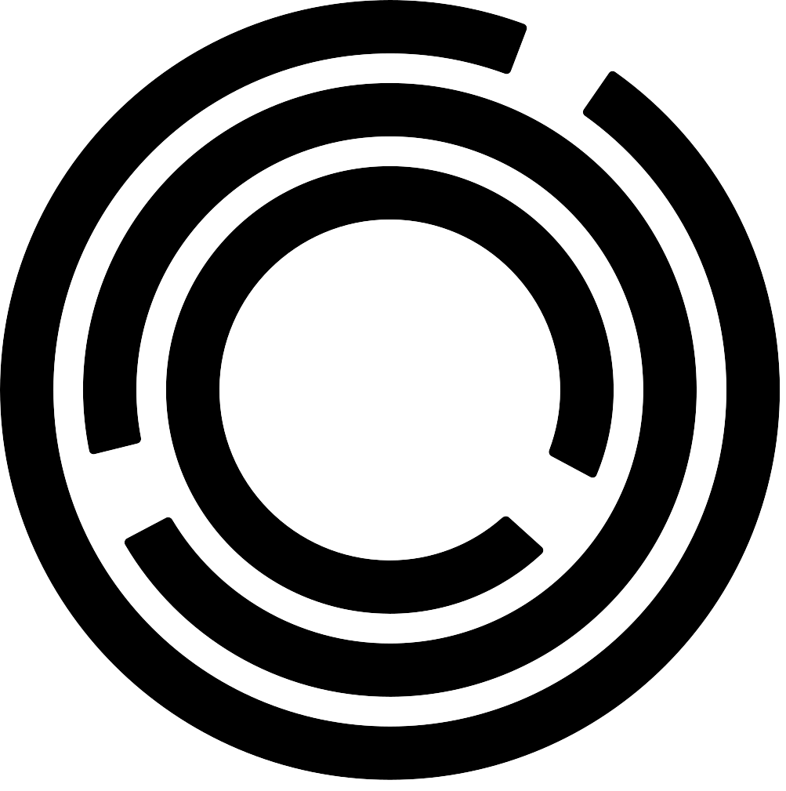

Hi, I'm McKenna!
I'm a rising sophomore at the University of Pennsylvania studying Computer Science with a minor in Gender, Sexuality, and Women's Studies.
Experience
June 2024 - July 2024
Engineering Summer Programs Staff
This summer I am working as a counselor for Penn's one-week middle school engineering camp, GEMS as well as a Computer Science TA for the Engineering Summer Academy at Penn, a high school program. With the GEMS program, I worked with rising ninth-grade students on a robotics curriculum. With the ESAP program, I worked with all levels of high school students on a Python-based curriculum which taught basics such as variables to advanced topics such as data science and object-oriented programming.
Academy of Math and Programming
During the summer between high school and college, I was selected as one of eighty students nationally for a rigorous five-week discrete mathematics and computer science curriculum. The staff included decorated math olympiad competitors, instructors from the nation's top private schools, and current undergraduate students from across the country. The program also included introductions to and applications of probability and game theory for quantitative trading.
July 2023 - August 2023

June 2022 - July 2022
Women's Technology Program
During the summer after my junior year of high school, I was selected as one of twenty students nationally for a rigorous four-week Electrical Engineering and Computer Science curriculum taught by current MIT undergraduate students, graduate students, and professors. The coursework included daily lectures in both EE and CS along with labs in EE and problem sets in CS completed in Python.
Clubs
Camp Kesem
Camp Kesem is a one-week summer camp for children ages 6 to 18 whose parents have been affected by cancer. Throughout the school year I was involved with the Accessibility and Accountability Committee, planning and running two DEI workshops, which impacted 50+ members and counselors. This summer, I will be a counselor for the Gold Unit, which serves 16- to 18-year-olds.
Venus Ultimate Frisbee
I've played sports throughout my life, so coming to Penn I knew I wanted to stay active through club sports. I joined the ultimate frisbee team in the fall of my freshman year and played on the B team throughout the spring season.
Women in Computer Science
In the fall of my freshman year, I joined the Women in Computer Science Advocacy Committee. My main work with the club was based around the Percentage Project, which is a nationwide non-profit working to bring awareness to the experiences of minority groups in computing. I will be the Advocacy Committee Co-Director and Percentage Project Campus Director for Penn during my sophomore year.
Portfolio
Burger Builder
A game made entirely from scratch in Java using the Swing framework.
Image Manipulation Program
A project in Java which uses 2D arrays to manipulate images and put filters on them.
Chat Server Model
A chat server made using Java which allows users to join, create, leave, delete channels, etc.
Monkey DNA Tree
A project in OCaml using Binary Search Trees and simplified DNA sequences to create a monkey family tree.
Furious Flying Fish
A game made in Java using object-oriented programming with a proprietary graphics module, PennDraw.
SIR Disease Model Zombie Game
A game created using PyGame to help simulate SIR diseases and how they move through a population.